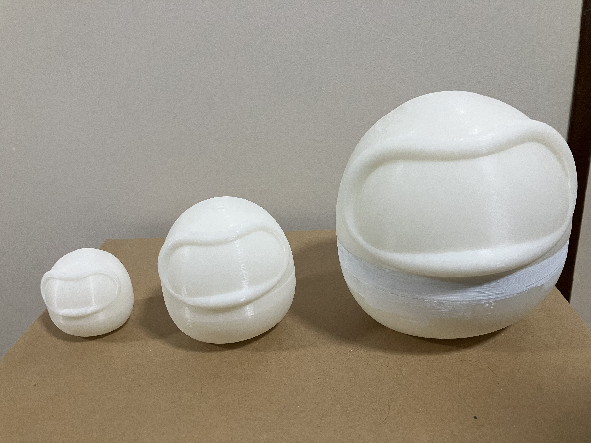

ダルマトリョーシカ
使用機材：3Dプリンター
使用材料：アクリル絵の具
水性プライマー
クッションテープ
fusion


ここからアクリル絵のと水性プライマーで塗装していきます。
完成
出力した際に「たぬきみたい」だと言われたため、1つはたぬきのデザインにしました。上からプライマーを塗っているので、多少の汚れや水には耐えることができます。
振り返り
最初は頭と胴体の接続部分が大きすぎたり、逆に小さすぎたりしてうまくマトリョーシカとして機能しませんでしたが、やすりで削ったり、クッションテープを使って何とかサイズを合わせることができました。
塗装は不慣れなこともあり、かなり時間がかかりましたが、センスとかは置いといて新しいことにチャレンジできたと思うといい経験になりました。